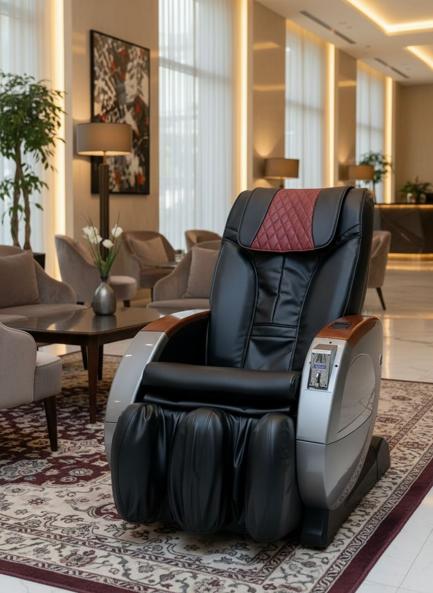
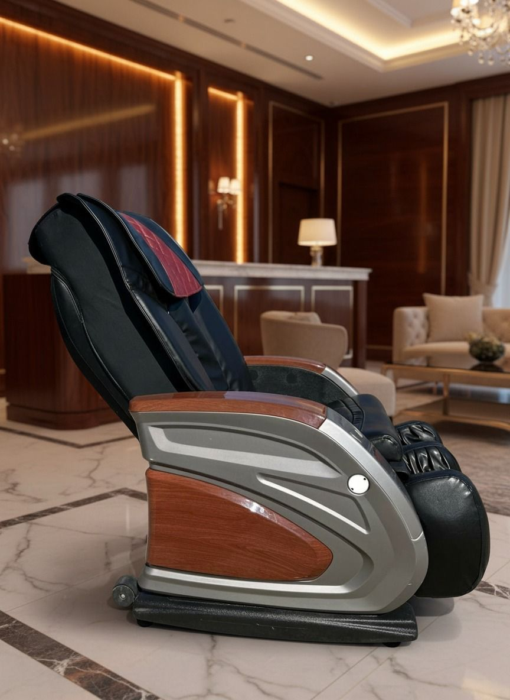

Ticari Seri
Massora M01 Ticari Masaj Koltuğu
M01; AVM, otel, spa, havaalanı ve bekleme alanları için geliştirilmiş ticari masaj koltuğudur.
SL-Track, 3D / 4D masaj, Zero Gravity ve akıllı vücut tarama özellikleriyle yoğun kullanıma uygundur.
Ticari Kullanım
Jeton / Banknot
SL-Track
Zero Gravity
Kullanıcı isteğine bağlı olarak ürün, ödeme sistemi devre dışı bırakılarak düğme kontrollü ev tipi kullanım modeline dönüştürülebilmektedir.
Teknik Özellikler
| Ürün Tipi | Ticari kağıt para / jeton masaj koltuğu |
|---|---|
| Kullanım Alanları | AVM, otel, spa, havaalanı, güzellik salonu, plaza, fitness ve bekleme alanları |
| Masaj Sistemi | SL-Track; boyun, sırt, bel, kalça ve bacak hattı |
| Masaj Teknolojisi | 3D / 4D derin doku masaj sistemi |
| Masaj Teknikleri | Yoğurma, vurma, shiatsu, rolling, tapping ve kombine programlar |
| Ödeme Sistemleri | Jeton ve kağıt para haznesi |
| Motor Sistemi | Yoğun ticari kullanıma uygun güçlendirilmiş motor yapısı |
| Bakım | Kolay servis edilebilir modüler yapı |